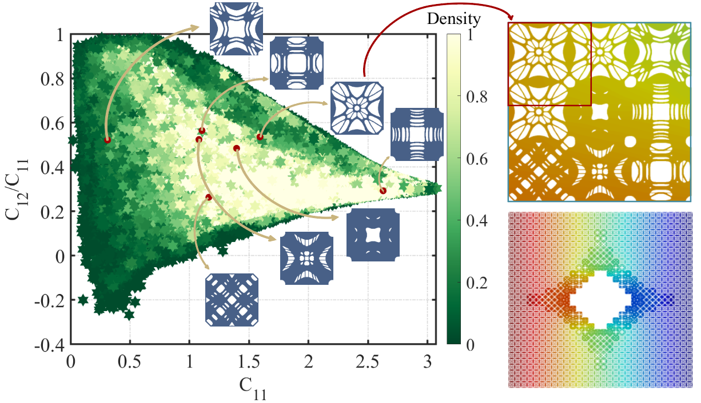
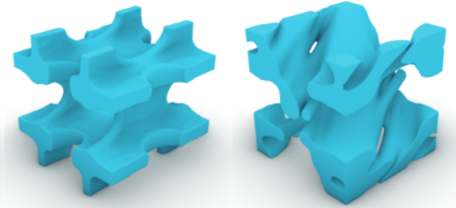
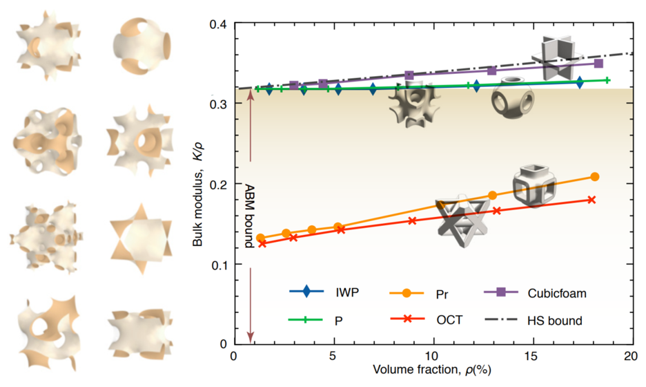
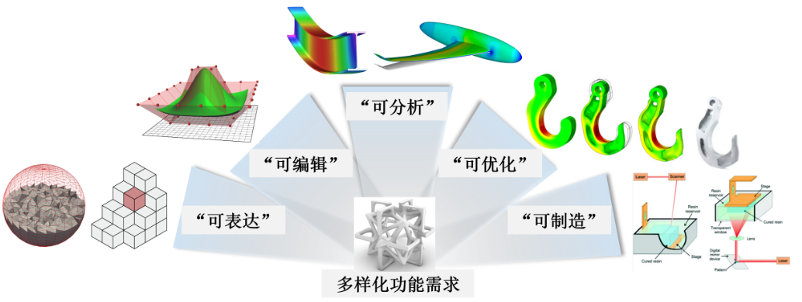

Publications
2024, 2023, 2022, earlier, under review
| Programmable 3D metamaterials with tailored Poisson's ratios over large deformation. Fuwen Zheng, Di Zhang, Winston Wai Shing Ma, Xiaoya Zhai*, Ligang Liu, Xiao-Ming Fu.
[ArXiv] |
|
|  | Constructing Boundary-identical Microstructures by Guided Diffusion for Fast Multiscale Designs. Jingxuan Feng, Lili Wang, Xiaoya Zhai*, Kai Chen, Wenming Wu, Ligang Liu, Xiao-Ming Fu*. under review [ArXiv] |
|  | OpenTM: An Open-source, Single-GPU, Large-scale Thermal Microstructure Design Framework. Yuchen Quan, Xiaoya Zhai*, Xiao-Ming Fu. under review [ArXiv] |

|
Guided Diffusion for Fast Inverse Design of Density-based Mechanical Metamaterials. Yanyan Yang+, Lili Wang+, Xiaoya Zhai*, Kai Chen, Wenming Wu, Yunkai Zhao, Ligang Liu, Xiao-Ming Fu*. under review [ArXiv] |
To be released
|  | Asymptotic attainment of bulk modulus upper limit in TPMS lattice metamaterials. Di Zhang, Tian Wu, Qing Fang, Xiaoya Zhai, Xiao-Ming Fu, Ligang Liu*. under review [Paper] |
|  | 超材料的智能设计研究进展. 代铁琳, 金刘超, 尚宸, 翟晓雅*, 傅孝明, 刘利刚. under review [Paper] |

|
Near-isotropic, Extreme-stiffness, Continuous 3D Mechanical Metamaterial Sequences Using Implicit Neural Representation. Yunkai Zhao+, Lili Wang+, Xiaoya Zhai*, Jiacheng Han, Winston Wai Shing Ma, Junhao Ding, Yonggang Gu, Xiao-Ming Fu. under review [Paper] |

|
Finite element analysis, machine learning, and digital twins for soft robots: state-of-arts and perspectives. Liuchao Jin, Xiaoya Zhai, Wenbo Xue, Jingchao Jiang, Kang Zhang, Wei-Hsin Liao*. under review [Paper] |